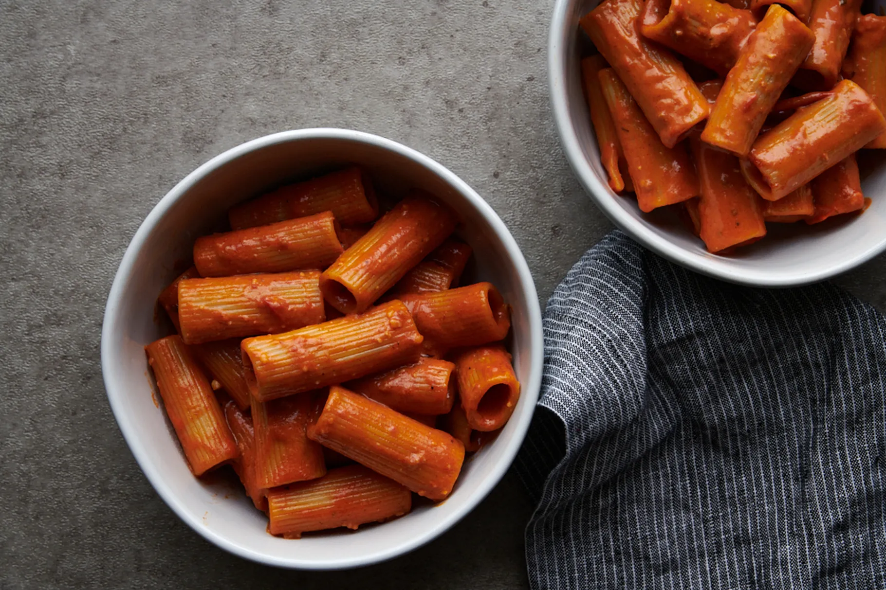

Tomato Gochujang Cream Pasta

Description
This spicy, rich, delicious pasta dish is made with tomatoes and gochujang. Gochujang is a Korean red chili paste commonly used in stir-fries and sauces.
By carmelizing tomato paste and gochujang together it brings out a savory, layered heat that becomes a flavorful base for foundational pasta sauce
ingredients: chicken broth, heavy cream, and Parmesean. The unexpected Korean twist on this pasta dish will have you asking for seconds.
Ingredients
- 1 pint cherry tomatoes
- 1 1/2 tablespoons extra-virgin olive oil, for drizzling
- Salt and freshly ground pepper
- 3 tablespoons unsalted butter
- 1 clove garlic, minced
- 1/3 cup tomato paste
- 2-3 tablespoons gochujang (Korean red chili paste), depending on your spice preference
- 3/4 cup heavy cream
- 3/4 cup chicken broth (not low-sodium)
- 1/2 to 3/4 cup freshly grated Parmesean cheese, depending on how much cheese you like
- Honey (optional)
- 8 ounces dry rigatoni, or pasta shape of choice
Steps
- Preheat the oven to 400 degrees. Arrange the cherry tomatoes on a foil-lined baking sheet. Drizzle the tomatoes with the oil and season with salt and
pepper. Roast the tomatoes for 20-25 minutes, until they soften and begin to burst.
- While the tomatoes are roasting, prepare the sauce. In a large saucepan melt the butter over medium heat and add the minced garlic. Cook for 1 minute,
stirring frequently, until fragrant. Add the tomato paste and gochujang to the pan. Increase the heat to medium-high and cook the mixture for 3-5 minutes,
stirring freguently, until the tomato paste and gochujang caramelize.
- Add the heavy cream and chicken broth and bring the sauce to a simmer. Continue simmering, stirring frequently, until the sauce begins to thicken an the
tomato paste and gochujang are fully disolved, 3-4 minutes. Reduce the heat to medium-low and stir in the Parmesean and several cranks of freshly ground
black pepper. Season the sauce with salt to taste and a couple drizzles of honey, if desired.
- Continue to reduce the sauce until it thickens, about 5 minutes, then gently stir in the roasted tomatoes.
- In a pot of boiling salted water, cook the pasta according to package instructions. When the pasta is almost finished cooking, you can add a splash of pasta
water to the sauce if a thinner sauce is desired.
- Drain the pasta, then toss it in the warm sauce and serve immediately with a few more cranks of black pepper.